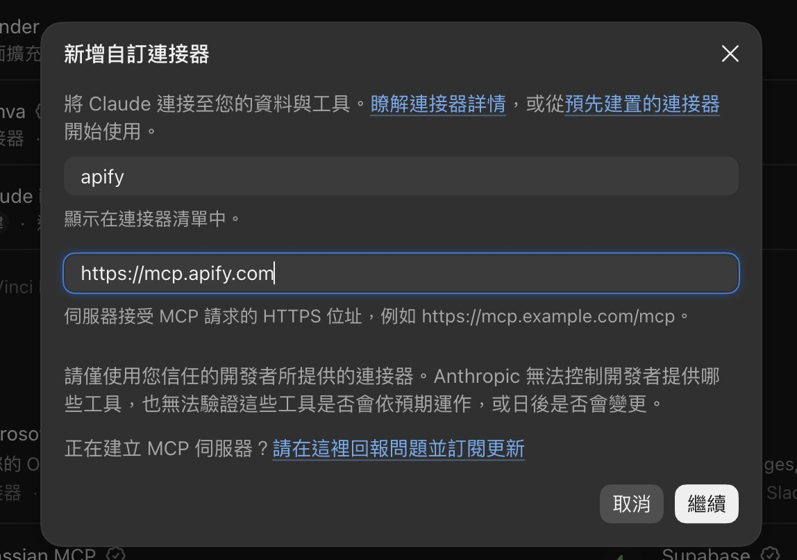
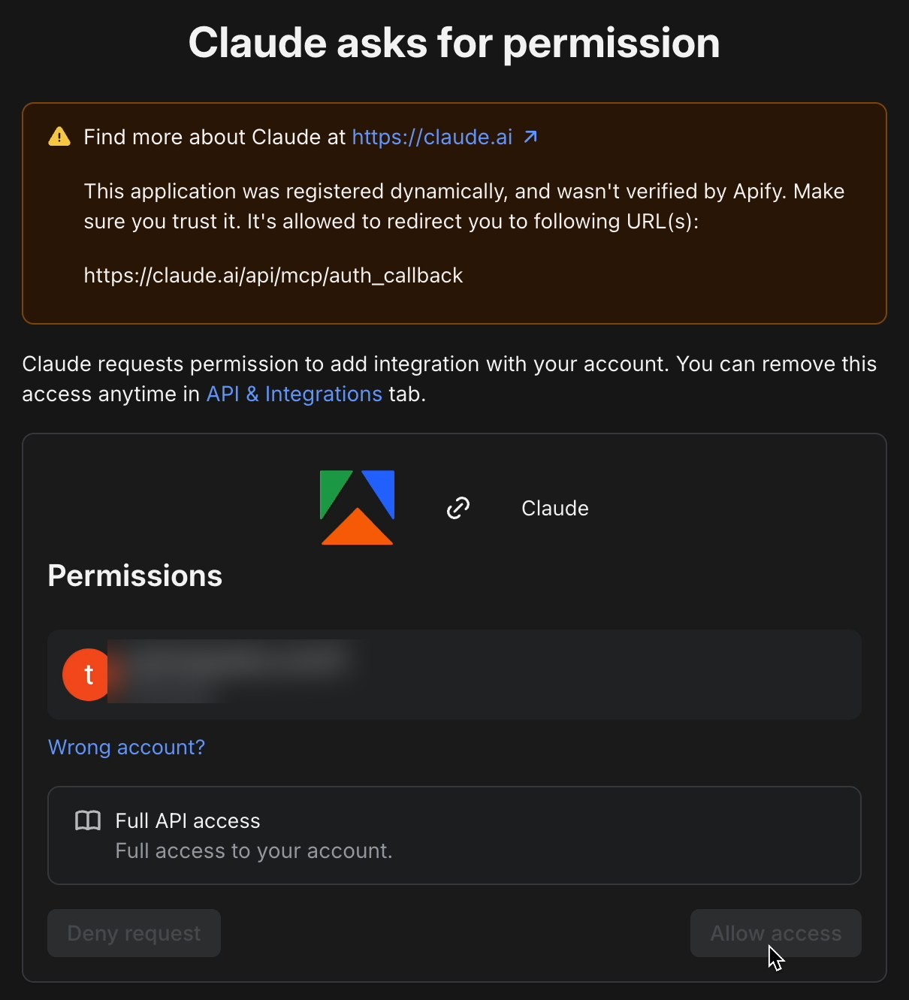
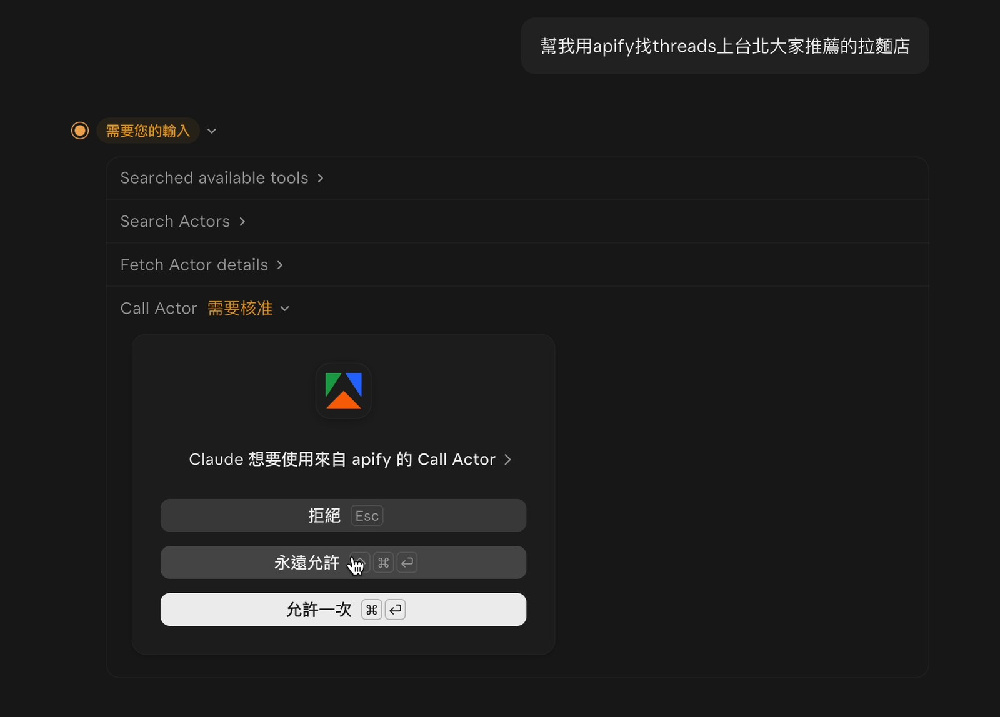
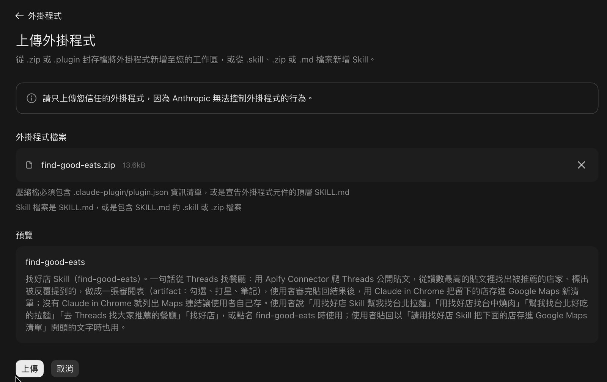
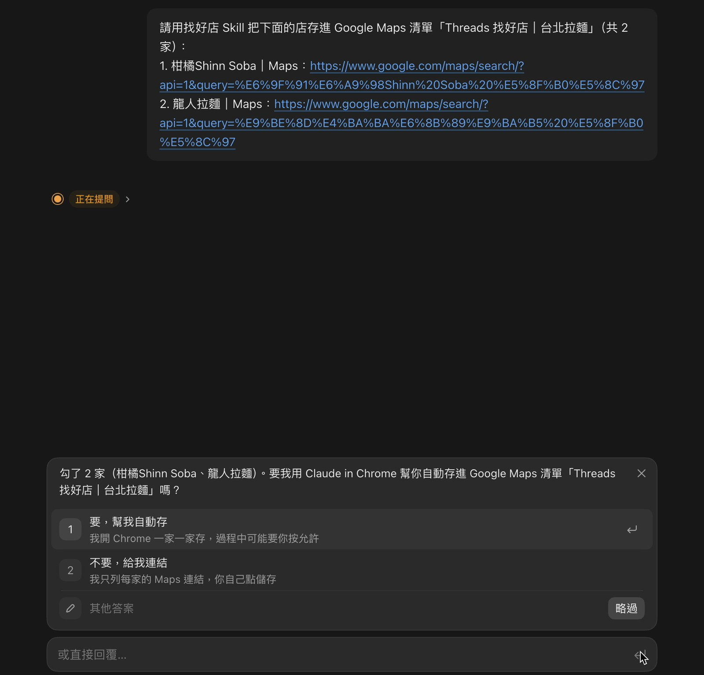
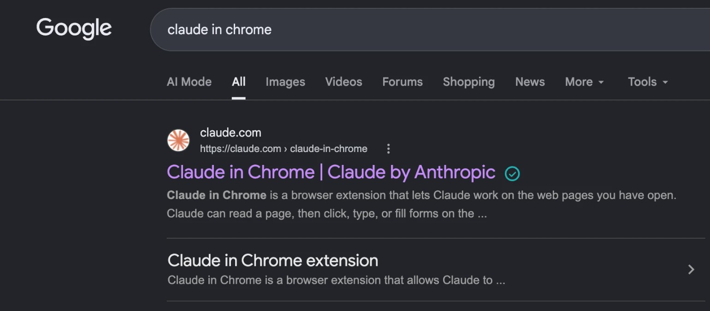
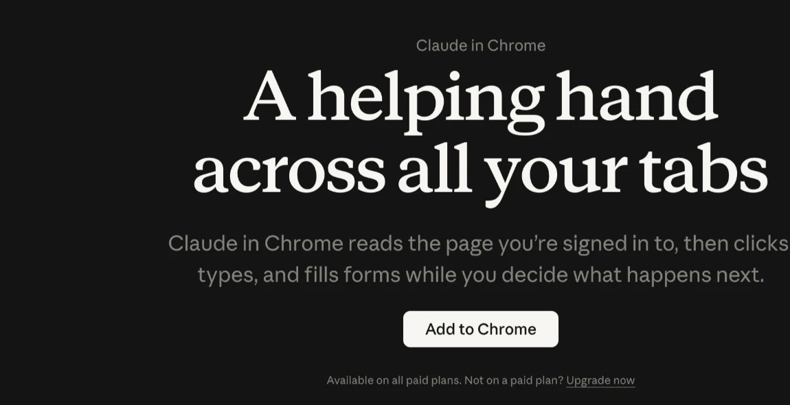
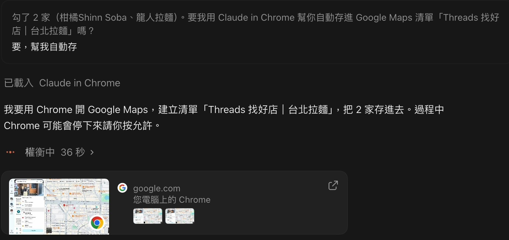
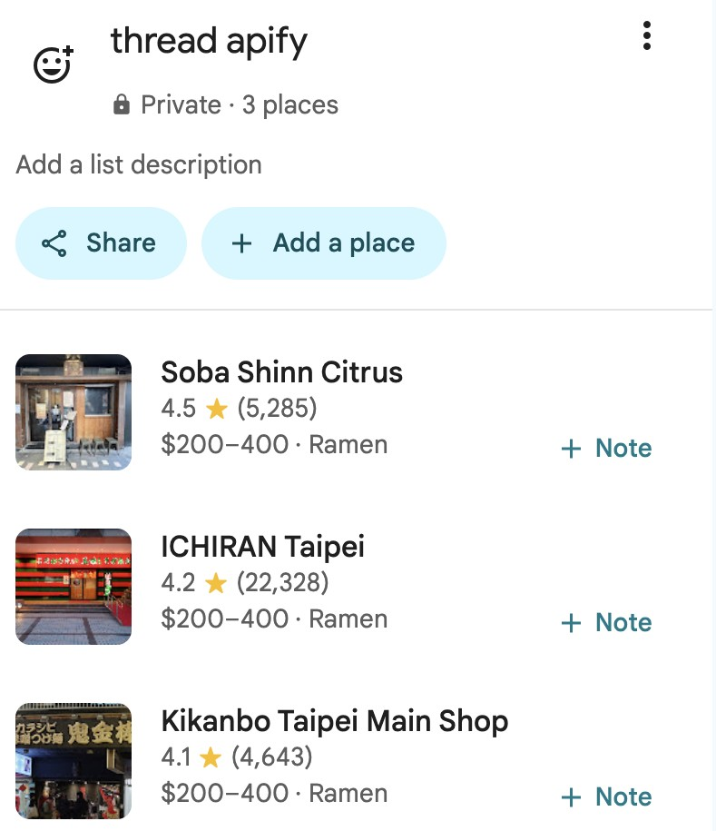

Threads 找好店
完整教學
給想把 Claude 用在生活裡、聽過 Connector 但還沒接過外部工具的學生和上班族。不用會寫程式。
- 在 Claude 加上 Apify 自訂 Connector，用一句話叫它去 Threads 搜某類餐廳
- 讓 Claude 把爬回來的貼文去雜訊、抽店名、合併重複，做成 10–20 家的審閱表
- 在審閱表上打星、勾選要存的店、寫筆記，再把結果交回給 Claude
- 加碼：用 Claude in Chrome 開一個 Google Maps 新清單，把勾選的店存進去（Free 方案：拿 Claude 列的 Maps 連結自己按儲存）
這課你會動手做：挑一種你想吃的，自己跑完一輪。做完手上會有一個存著 10 家左右餐廳的 Google Maps 清單，和一張下次還能再用的審閱表。
只想用送你的找好店 Skill？翻到第 6 頁，裝好就能一句話開始找店。
還沒接 Apify？先看第 3 頁。
核心概念
這套流程怎麼運作
Claude 自己進不去 Threads。接上 Apify 之後，它就能去 Threads 抓大家的貼文、整理成店家清單；想要的話，再存進 Google Maps。
Free 方案：最後一步改成 Claude 給你每家的 Google Maps 連結，自己點開按「儲存」。
每個東西在做什麼
- Threads：資料來源。大家吃完會發心得、列清單，這課只抓公開貼文。
- Apify：一個爬蟲平台，上面有很多別人做好的爬蟲（英文叫 Actor）。這課用它的 Threads 爬蟲把貼文抓回來。
- Connector（連接器）：把 Apify 接到 Claude 的那條線。接好之後，你在對話裡說一句，Claude 就能叫 Apify 的爬蟲跑，不用自己開 Apify 網站。
- Claude：讀貼文、抽店名、合併重複，整理成一張你能直接挑的店家清單。
- Claude in Chrome（加碼）：Chrome 擴充功能，讓 Claude 在你已登入的 Chrome 裡打開 Google Maps、一家一家按「儲存」。Google 沒有開放讓程式直接寫入清單，所以只能這樣存。
- Google Maps（加碼）：最後存店的地方，清單存好手機也看得到。
這課的主角是前三個：讓 Claude 接上 Threads，一句話把大家推薦的店整理出來。存進 Google Maps 是加碼，想要再做。
圖中的 logo 屬於各公司，這裡只用來標示是哪個服務。
這段重點Threads → Apify → Claude → Google Maps
事前準備
接上 Apify Connector
只要做一次。接好之後，任何對話都能叫 Apify 的爬蟲。
- 到 apify.com 註冊一個免費帳號，不用填信用卡。
- 回到 Claude，左側點 自訂 → 連接器，右上 ＋新增 → 新增自訂連接器。
- 名稱填 apify，網址填 https://mcp.apify.com，按「繼續」。下一個視窗的驗證設定照預設，按「新增」。

- 跳到 Apify 的網頁「Claude asks for permission」，確認是你的 Apify 帳號，按 Allow access。
- 回到 Claude，連接器清單裡有 apify，就接好了。

接好先試一句
確認你能使用 Apify 的工具，列出來給我看，先不要搜尋。
這段重點網址只填 mcp.apify.com
實作流程 ① 搜尋
一句話，叫爬蟲去 Threads 找
開一個新對話，貼上這句就好。
用 Apify 幫我找 Threads 上的台北拉麵，抓最熱門的 20 則。

第一次叫 Apify 的工具，Claude 會停下來問你，每種工具問一次。按「允許一次」，或確定以後都要用就按「永遠允許」。
關鍵字怎麼下，決定抓不抓得到
- 只用一個「地點＋食物」短詞：「台北拉麵」抓得到。多加「推薦」這種字就可能一則都沒有（我們實測「台北拉麵推薦」是 0 則）；地點寫太細也可能抓不到（「東區拉麵」也是 0 則）；只打「拉麵」又幾乎都是別的縣市。想找特定區域，先抓「台北拉麵」，再請 Claude 篩。短詞只是比較容易抓到，不保證每種組合都有結果。
- 抓回一堆外文？再補一句「語言設中文」。
- 時間範圍：限定最近一年，舊文會少很多，但讚數很高的舊整理文也會被濾掉。我們的做法是不限日期，表上列出每則的日期，由你自己判斷。
換成你想吃的：「台中燒肉」「新竹早午餐」「台南牛肉湯」，句子其他部分不用改。
這段重點一個短詞、設中文、想好要不要限日期
實作流程 ② 整理
請 Claude 整理成店家清單
抓回來的是一堆貼文，不是店家清單。這一步請 Claude 從讚數最高的貼文開始，一則一則找出店名。
幫我把這些貼文整理成店家清單：照讚數排，被多則提到的放前面，附 Google Maps 連結，不要放作者帳號。
Claude 會跳過其他城市、跟吃無關、只有發問、業配和店家自己的宣傳，只抽內文寫出來的店名，同一家不同寫法合成一家。想更準，可以再補一句「讚數不要加總，只看最高那則」。
表上每一欄在看什麼
- 反覆提及：至少兩則貼文提到這家店，可以優先點開看。兩則也可能是同一個人發的、或其中一則在抱怨，所以還是要點原文看一下。
- 貼文讚數：是整篇貼文的讚數，不是這家店的評分。一篇整理文的讚，會落在裡面每一家身上，所以只看最高那則、不加總，免得被放大。
- 貼文日期：太久以前的推薦，店可能已經變了，甚至收掉。
- Google Maps 連結：點開看是不是同一家、還有沒有營業。
挑出你要的
看完表，跟 Claude 說要存哪幾家，例如「存第 1、3、5、6 家」。挑的時候看有沒有寫細節（排隊多久、湯頭怎樣），寫明合作、招待或附折扣碼的先打個問號。
這段重點反覆提及的先看，點原文再確認
加碼｜找好店 Skill
我們把它做成了找好店 Skill
前面爬 Threads、整理出店家清單，其實就很夠用了。接下來是加碼：想更省事，或想把店存進 Google Maps 地圖，再往下看。
前面這套做法，我們整理成一個 Skill。裝好之後，一句話就能：
- 去 Threads 抓 60 則公開貼文，從讚數最高的找出店名，被反覆提到的排最前面
- 做出一張審閱表：勾選要存的店、打星、寫筆記，Google Maps 和 Threads 原文一點就開
- 加碼：審完貼回去，自動存進 Google Maps 新清單；沒有 Claude in Chrome 就給你每家的連結自己存
要先接好 Apify（第 3 頁）。留言「拉麵店」，我們會私訊你下載連結。Skill 的英文名字是 find-good-eats。
⚠ 最常卡住的地方：要上傳的是 zip 檔
變成資料夾了：在資料夾上按右鍵 →「壓縮」，得到 zip 再上傳。
安裝兩步
- 到 設定 → 自訂 → Skills，右上「＋新增」→「上傳 Skill」→ 選 find-good-eats.zip。桌面 app 也可以從左側 外掛程式 →「新增」→「上傳外掛程式」，畫面如下，按「上傳」。

- 看到「已新增 find-good-eats」，或清單出現 find-good-eats、旁邊沒有標「已停用」，就裝好了。開新對話打「/」，清單裡找得到 find-good-eats 就確定能用。
這段重點上傳的是 zip，不是資料夾
加碼｜找好店 Skill
開始使用：一句話找店
用找好店 Skill 幫我找台北拉麵
換成任何「城市＋想吃的」：「用找好店 Skill 幫我找台中燒肉」。叫不到的話，先打「/」，從清單點 find-good-eats，再接「幫我找台北拉麵」（我們錄影時就是這樣叫的）。
它會照這個順序做
- 先講清楚：哪些步驟 Free 就能用、這一輪大約花多少 Apify 額度。
- 搜 Threads：用一個「地點＋食物」關鍵字抓約 60 則公開貼文，不限日期；整理完不到 8 家，會自動再抓一次最新的。
- 整理：照讚數抽店名，被 2 則以上提到的標「反覆提及」。對話裡回報一行：抓回幾則、看了幾則、找到幾家、幾家被反覆提到。
- 做審閱表：在右邊打開，用法見下一頁。
- 存地圖（加碼）：審完貼回「複製結果」，它會先問你「勾了 N 家，要我用 Claude in Chrome 自動存進 Google Maps 清單嗎？」回「要」就建好新清單、一家一家存，名字對不上或看到「永久停業」的會跳過，最後回報存了幾家。回「不要」或沒有 Claude in Chrome，它給你每家的 Maps 連結自己存。

這段重點一句話開始，審完貼回去
加碼｜找好店 Skill
審閱表：打星、勾選、寫筆記
Claude 幫你縮小範圍，決定去哪家的是你。

審閱表怎麼用
- 分兩區：上面「反覆提及」，下面「其他推薦」。每家有讚數、貼文日期和一句摘錄。
- 勾選＝要存：點左邊的圓圈。給星等也會自動勾選。
- 先看再決定：「Google Maps」「Threads 原文」兩顆按鈕，點開看地點和原貼文。
- 寫筆記：點「加筆記」，例如「週末才去」。筆記只留在表上，不會寫進 Google Maps。
- 篩選：最上面切「全部／已勾選／沒勾的」，底部顯示「已勾選 N 家」。
挑店時可以看這四件事
- 反覆提及：同一家被好幾則貼文提到，點原文看看是不是不同的人。
- 有寫細節：排隊多久、湯頭怎樣、哪道不推，寫得具體的心得比較有參考價值。
- 看有沒有合作標示：寫明合作、招待，或附折扣碼的，先打個問號。
- 日期夠新：兩三年前的推薦，先點開 Maps 看最近的評論。
審完，交回給 Claude
按底部的「複製結果」，看到「已複製」就回對話框貼上送出。貼上的字開頭是「請用找好店 Skill 把下面的店存進 Google Maps 清單」，不用自己打。清單名稱也在底部，存之前可以改。審閱表會留在原本的對話裡，下次從對話紀錄點回來就找得到。
這段重點Claude 縮小範圍，你拍板
加碼
存進 Google Maps 清單
整理出店家清單就很夠用了；想把店直接存進 Google Maps，再做這步加碼。
用找好店 Skill 的話：貼回「複製結果」後，Claude 會先問你要不要用 Claude in Chrome 自動存；回「要」才存，回「不要」就只給 Maps 連結。下面的步驟是沒用 Skill 時自己來的做法。
付費方案：先裝 Claude in Chrome
- 用 Chrome 搜尋「claude in chrome」，點第一個結果 claude.com/claude-in-chrome。

- 按「Add to Chrome」，會開 Chrome 線上應用程式商店的 Claude 擴充功能，加到 Chrome 後用你的 Claude 帳號登入。按鈕以商店頁面為準。Free 帳號登入會看到「需要付費方案」。

- 在同一個 Chrome 登入你的 Google 帳號。
Free 方案：拿連結自己存
把我挑的店列成清單，每家附 Google Maps 連結。
一家一家點開連結，按「儲存」，第一家選「新增清單」取好名字，之後都存進同一個清單。
這段重點Claude in Chrome 只開放付費方案
加碼
讓 Claude 一家一家存進去
- 回到有店家清單的那個 Claude 對話（不是 Chrome 的側欄），挑好要存哪幾家，貼上這句：
用 Claude in Chrome 打開 Google Maps，新增一個清單叫「Threads 找好店｜台北拉麵」，把我挑的店一家一家存進去。存之前先確認名字對、在台北；看到「永久停業」或不確定是哪家，就跳過並告訴我。全部存完，打開清單讓我看。
- Claude 會用你電腦上的 Chrome 自己點，Chrome 上方會出現「Claude started debugging this browser」。看著它做，需要你按允許時它會停下來。
- 最後打開清單，數一下家數、有沒有存到同名的別家分店。我們實測存了 3 家，都成功。


這段重點存完打開清單核對一次
費用與方案
要花錢嗎？哪個方案做得到？
這條流程會碰到兩筆帳：Claude 的方案，和 Apify 的額度。
Claude：主線 Free 就能做，只有加碼要付費
Free 方案
- 可以加 1 個自訂 Connector，所以接得上 Apify。
- 搜尋、整理、審閱表都能做。
- 沒有 Claude in Chrome。加碼那步改成 Claude 列出每家的 Google Maps 連結，你自己點開按「儲存」。
- 已經加過別的自訂 Connector 的話，要先移掉才能加 Apify。
付費方案（Pro 以上）
- 加碼那步也能交給 Claude，自動存進 Google Maps。
- Claude in Chrome 只支援 Chrome 瀏覽器，不支援其他瀏覽器和手機。
Apify：每月 US$5 免費額度
- 免費帳號每個月有 US$5 的額度，不用信用卡。
- 額度用完會停到下個週期，不會扣款；沒用完的也不會累積到下個月。
- 我們這次實測：找一輪台北拉麵（抓 60 則 Threads 貼文）大約 US$0.2，免費額度一個月大約夠跑二十輪。找好店 Skill 不夠還會補抓，或 Apify 調整價格，費用會再多一點。
這段重點Apify 額度和 Claude 用量是兩筆帳
費用與方案
哪裡特別吃 Claude 的用量
Apify 花的是 Apify 的額度，不算 Claude 的用量。Claude 這邊，有兩個地方特別吃用量：
- 🔥 整理貼文：Claude 要讀完幾十則貼文、抽出店名，再整理成清單；用找好店 Skill 還會做出一張互動審閱表。
- 🔥 存進 Google Maps（加碼）：Claude in Chrome 每存一家，都要看畫面、點好幾下，十家就是幾十步。
省用量的做法
- 一次勾 5–10 家就好，不要整張表都存。
- 整理完開一個新對話，貼上「複製結果」再存地圖，不用把前面幾十則貼文一起帶著跑。
- 同一種店不用一直重跑，審閱表留在原本的對話，下次點回來就看得到。
想看官方說明
- 自訂 Connector｜support.claude.com/en/articles/11175166
- Claude in Chrome｜support.claude.com/en/articles/12012173
- Apify 方案與額度｜apify.com/pricing
這段重點一次存 5–10 家就好
疑難排解
使用界線與常見問題
抓資料的界線
- 只抓公開貼文、個人少量用：Threads 的使用條款不允許未經許可的自動收集。公開、少量、自己用，不等於已經取得平台許可，所以只用來幫自己找吃的，不轉賣、不把抓到的資料公開出去。
- 不存作者帳號：審閱表只留店名和內容重點，貼文作者是誰不需要記。
- 只接信得過的 Connector：抓回來的貼文裡，也可能藏著寫給 AI 看的指令。這部分在 6-2「Connector 權限與提示詞注入」會細講。
常見問題
常見問題
這段重點卡住就回來翻這頁
延伸
你已經有一份自己挑的餐廳清單了
做到這三件，就學會了
- 連接器清單裡有 apify
- 一句話叫它搜 Threads，拿到一張可以打星、勾選的審閱表
- Google Maps 裡多了一個清單，存著你勾選的店
考考你
審閱表上，哪一家最值得先點開看？
- 只被一篇爆紅貼文提到的店
- 被 3 則不同貼文提到、標「反覆提及」的店
- 店家自己發文宣傳的店
- 店名最特別的店
這課是你叫一次、它跑一次。下一課（6-3）教你排程，讓 Claude 每週自己去 Threads 看有沒有新店。
介面名稱與畫面是 2026 年 11 月的 Claude 網頁版。